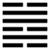

Trạch Thủy Khốn (困 kùn)
Lên cao mãi thì có lúc sẽ té mà khốn, cho nên sau quẻ Thăng tới quẻ Khốn.
Thoán từ:
困: 亨, 貞, 大人吉, 无咎. 有言不信．
Khốn: Hanh, Trinh, đại nhân cát, vô cữu. Hữu ngôn bất thân (chữ [nhân đứng kế ngôn 信] ở đây dùng như chữ [伸]
Dịch: Khốn: Hanh thông. Chính đính như bậc đại nhân (có đức) thì tốt, không lỗi. Dù nói gì cũng không bày tỏ được lòng mình (không ai nghe mình)
Giảng: Quẻ Khảm là dương ở cuối, quẻ đoài là âm ở trên, dương cương (quân tử) bị âm nhu (tiểu nhân) che lấp, cho nên gọi là Khốn.
Lại thêm: nội quái một hào dương bị kẹt giữa hai hào âm; ngoại quái hai hào dương ở dưới một hào âm, cùng là cái tượng quân tử bị tiểu nhân làm khốn.
Một cách giảng nữa: Chằm (Đoài) ở trên mà Khảm (nước) ở dưới, nước trong chằm chảy xuống dưới, tiết mất hết, chằm sẽ khô, thành ra cái tượng Khốn.
Tuy nhiên, Khảm là hiểm, đoài là hoà duyệt, vậy tuy gặp hiểm mà vẫn vui vẻ hanh thông. Hanh thông chỉ là đối với bậc đại nhân, có đức cương, trung, giữ đạo chính thôi; vì hạng người đó càng gặp cảnh khốn, tài càng được luyện; đức càng được trau, chí càng vững dù có phải hy sinh tính mệnh để thỏa chí nguyện cũng không ngại, thân tuy khốn mà vẫn vui vẻ, đạo của họ vẫn hanh thông, cho nên Hào từ cho là tốt, không có lỗi.
Ở vào thời Khốn, chỉ có cường quyền, không có công lý, nên đừng nói gì cả, càng nói chỉ càng thêm vạ miệng, không biện bạch được gì đâu. Đây là lời khuyên chung, còn bậc quân tử có thể “sát thân dĩ thành nhân” thì lại khác.
Ý nghĩa các hào:
1.
初六: 臀困于株木, 入于幽谷, 三歲不覿．
Sơ lục: Đồn khốn vu châu mộc, nhập vu u cốc, tam tuế bất dịch.
Dịch: Hào 1, âm: Bàn toạ bị khốn ở gốc cây, lại sụp vào trong hang tối, ba năm không thấy ai.
Giảng: Hào này ở đầu quẻ Khốn, âm nhu, mê muội; hào 3, dương ứng với nó, bất trung bất chính không giúp gì được nó; như một người ngồi trên cây trụi trồi gốc ra (ý nói ở hào đầu, thấp nhất), rồi lại sụp vào hang tối (hào này âm, nhu mê muội) mà không thấy ai lại cứu (ai đây trỏ hào 4).
2.
九二: 困于酒食, 朱紱方來．利用享祀, 征凶, 无咎．
Cửu nhị: Khốn vu tửu thực, chu phất lai.
Lợi dụng hưởng tự, chinh hung, vô cữu.
Dịch: Hào này dương cương, đắc trung, đáng lẽ tốt, nhưng ở thời Khốn thì cũng vẫn bị khốn vì ăn uống, do ơn vua lộc nước; được ở trên ứng hợp lại nhờ giúp (ở đây tượng trưng bằng việc đem cái “phất” đỏ, một bộ phận lễ phục để che đầu gối); nên đem lòng tinh thành để tế thần linh mà xử sự trong thời khốn này; nếu cứ tiến hành thì không gặp thời xấu; giữ đạo thì không có lỗi.
3.
六三: 困于石, 據于蒺蔾, 入于其宮, 不見其妻, 凶．
Lục tam: Khốn vu thạch, cứ vu tật lê, nhập vu kì cung, bất kiến kì thê, hung.
Dịch: Hào 3, âm: như người bị khốn vì đá, mà lại dựa vào cây tật lê, vô nhà thì không thấy vợ, xấu.
Giảng: Hào này bất trung,bất chính, âm nhu ở vào thời khốn, ở trên cùng nội quái là Khảm, tức ở cảnh cực hiểm, tấn thoái đều không được nên ví với người bị đá dằn ở trên (tức hào 4) mà lại dựa vào một loại cây có gai (tật lê – tức hào 2), vô nhà lại không thấy vợ (tức hào trên cùng cũng âm nhu, không giúp 3 được gì). Rất xấu.
Theo Hệ từ truyện Chương v, Khổng tử thích nghĩa thêm như sau:
“Không phải chỗ đáng bị khốn mà mình bị khốn thì danh ắt bị nhục, không phải chỗ đáng dựa mà mình dựa vào thì thân tất bị nguy; đã bị nhục lại bị nguy thì sắp chết tơi nơi rồi, còn thấy sao được vợ nữa?”
4.
九四: 來徐徐, 困于金車, 吝, 有終．
Cửu tứ: Lai từ từ, Khốn vu kim xa, lận, hữu chung.
Dịch: Hào 4, dương : (Bạn mình) lại chậm vì bị cỗ xe bằng kim khí chặn (khốn) có điều ân hận, nhưng được trọn vẹn về sau.
Giảng: Hào này dương cương, nhưng bất trung, bất chính, ở vào Khốn, trong vào hào 1 (ứng với nó) tới giúp; nhưng 1 không tới mau được vì bị hào 2 chặn ở giữa (hào 2 này ví với cỗ xe bằng kim khí, có lẽ vì 2 dương cương, mà kim khí là chất cứng chăng cho nên có điều đáng ân hận, xấu hổ; nhưng cuối cùng vẫn liên hợp được với I vì hai bên đều dốc lòng ứng với nhau (4 là dương, 1 là âm)
5.
九五: 劓刖, 困于赤紱．乃徐有說, 利用祭祀．
Cửu ngũ: tị nguyệt, khốn vu xích phất,
Nãi từ hữu duyệt, lợi dụng tế tự.
Dịch: Hào 5, dương: Bị xẻo mũi, cắt chân, khốn vì cái “phất” đỏ; thủng thẳng sẽ vui, nên dùng lòng chí thành lúc cúng tế (mà xử vào thời Khốn).
Giảng: Hào dương ở vị chí tôn, có tài đức, nhưng ở vào thời Khốn, người chung quanh mình và ở dưới mìmh đều bị khốn cả, lại thêm hào trên cùng là âm muốn dè ép quanh mình, hào 4 dương cương ở dưới tình làm hại mình, ngay đến hào 2 đã đem cái “phất” đỏ cho nó, nhờ nó giúp, nó cũng chỉ làm cho mình thêm khốn’ như vậy mình không khác gì kẻ bị thương ở mũi (xẻo mũi), ở chân (cắt chân); nhưng 5 và 2 cùng có đức cương trung thì rồi sẽ hợp với nhau, cứ chí thành thì sẽ hanh thông, vui.
6.
上六: 困于葛藟, 于臲卼．曰: 動悔, 有悔, 征吉．
Thượng lục: Khốn vu cát lũy, vu niết ngột.
Viết động hối, hữu hối, chinh cát.
Dịch: Hào trên cùng,âm: Bị khốn vì dây sắn dây leo, khập khễnh, gập ghềnh; tự hỏi rằng; hoạt động thì ân hận chăng? Biết suy nghĩ như vậy thì hành động sẽ tốt.
Giảng: Hào này ở cuối thời Khốn, như người bị buộc chằng chịt trong đám dây sắn dây leo mà lại đi đứng trong chỗ khập khễnh, gập ghềnh; nhưng khốn tới cùng cực rồi thì sẽ thông, cho nên nếu thận trọng, biết ăn năn thì sẽ tốt.
So sánh ba quẻ Truân, Kiển, Khốn.
Quẻ Truân là đầu thời khó khăn, còn có thể hành động chút ít để cứu vãn thời thế được. Quẻ Kiển là giữa thời có khó khăn, nên chờ thời, không làm gì hết, hoặc có vì bổn phận mà làm thì cũng khó có kết quả.
Tới Quẻ Khốn, thời khó khăn lên tới tột điểm, 5 hào xấu (Khốn, lận) chỉ có hào cuối cùng mới tốt, đành phải chờ thời, giữ đức trung, chính, lòng chí thành mới qua được cơn khốn.